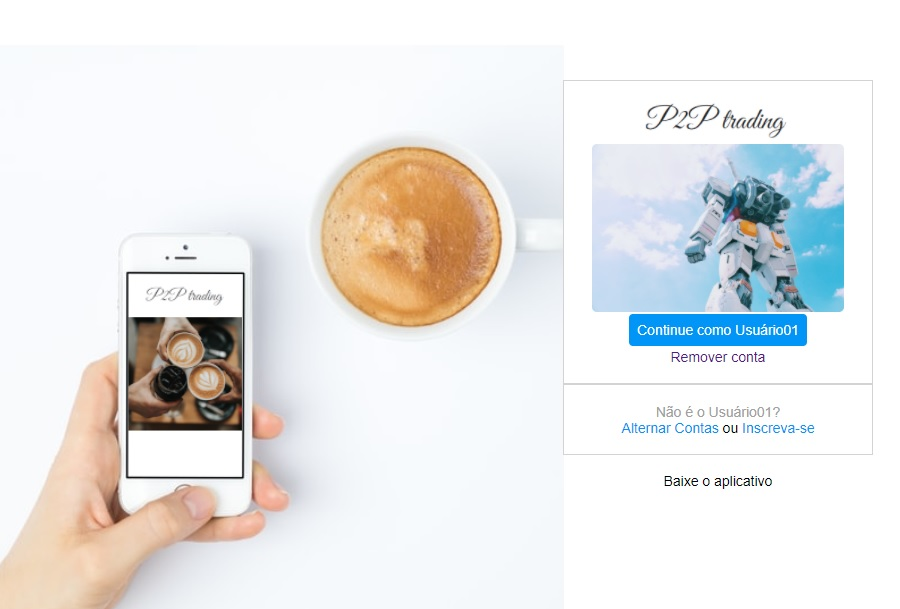

Formatação de tela inicial de rede social de vendas P2P em html

https://github.com/FilipeLageGarcia/InstagramHtml
Projeto criado baseando-se no curso da Digital Inovation One que tinha como objetivo a criação de uma capa de rede social similar ao Instagram.